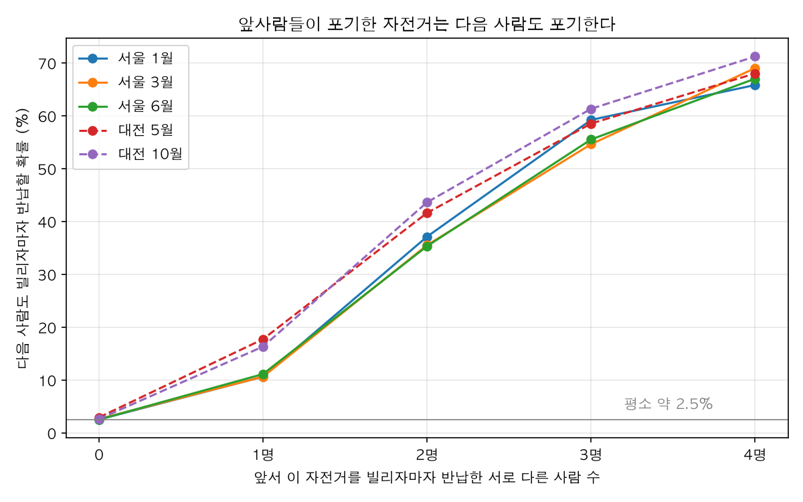
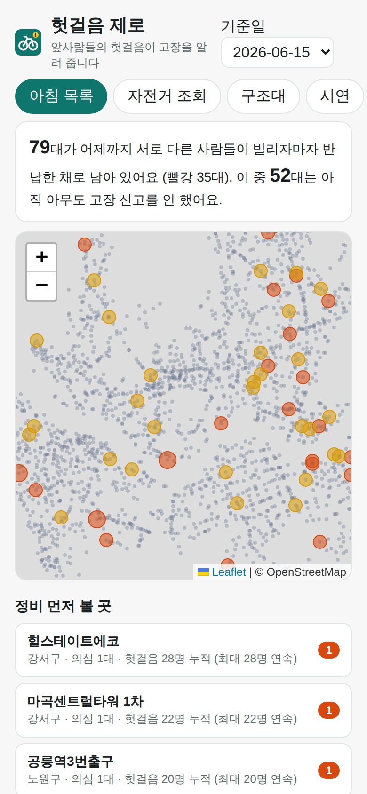
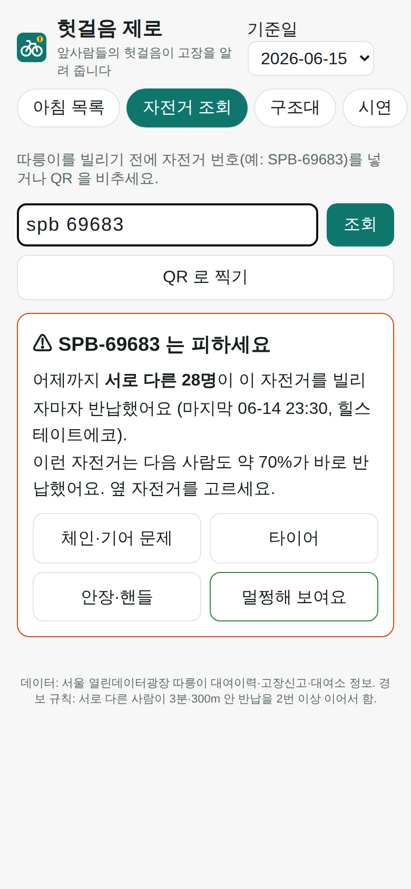
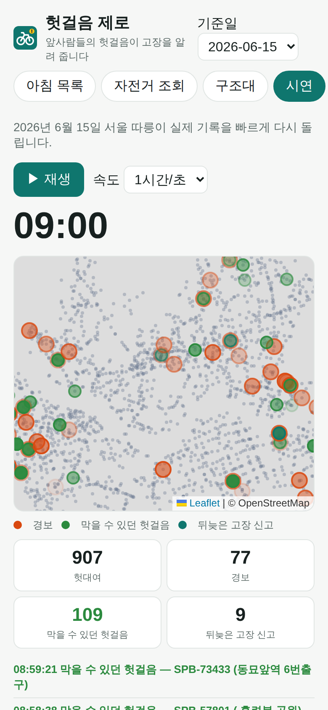
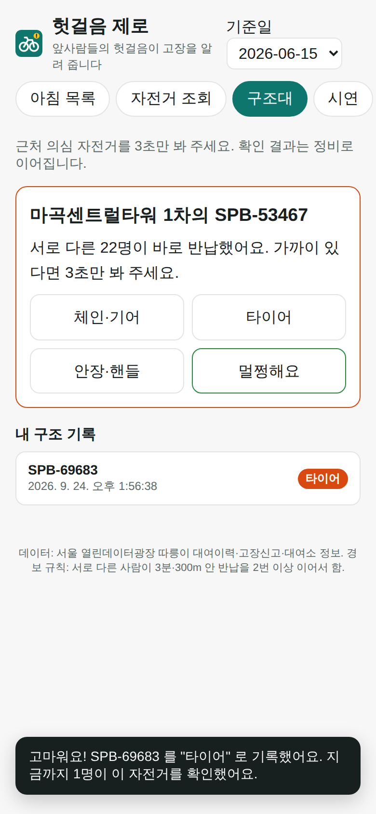

공공자전거 공개 데이터 · 고장 예보
헛걸음 제로
앞사람들의 헛걸음이 고장을 알려 준다
이름 · 학교 (대회 정해지면 채움)
1
장면
QR 을 찍고, 페달을 밟았더니 체인이 헛돈다
그냥 반납하고 옆 자전거를 빌린다. 신고는… 귀찮다.
그런데 이 자전거, 내 앞에서도 여러 명이 똑같이 포기했다.
기록엔 다 남아 있었다.
SPB-69683 · 힐스테이트에코 대여소 (2026-06 실제 기록)
6월 14일 23:30 까지
서로 다른 28명이 연달아
빌리고 3분 안에 같은 곳에 반납
→ 다음 날 첫 이용자도 또 반납
2
문제
공단은 신고가 있어야 고장을 안다
10만 대+따릉이 고장 신고, 매년
1순위이용자 불만 "고장 자전거가 너무 많다"
49~61%연속 헛대여 중 7일 뒤에도 신고 없음
고장 자전거는 앱에 "대여 가능" 으로 남아, 다음 사람이 또 빌렸다가 또 반납한다.
헤럴드경제 2026-09 · 서울 열린데이터광장 대여이력·고장신고 2026년 1·3·6월
3
아이디어
헛대여 = 3분 안에, 300m 도 안 가고, 같은 곳에 반납
한 번은 우연(마음이 바뀜). 서로 다른 사람이 연달아 포기하면 자전거 탓.
정상 이용
A 가 25초 만에 반납
B 가 40초 만에 반납
경보 (노랑)
3연속 = 빨강
- 같은 사람이 다시 빌려 본 것은 한 번으로 (생년·성별, 없으면 "반납 2분 안 재대여")
- 기준은 1월 자료로만 정하고, 3·6월과 대전에 그대로 시험 — 미리 본 데이터에 맞추지 않기
4
증거 1 · 두 도시, 다섯 달, 약 1천만 건

앞선 포기 0명
2.5%
서로 다른 2명
35~44%
약 14배. 우연이 아니다.
5
증거 2
신고보다 하루 가까이 빠르다
20~25시간경보 → 고장 신고 (중앙값)
3.5~4.6명그 사이 한 자전거에서 헛걸음
51.8~60.2%경보 정밀도 (다른 달·도시, 1월과 ±2.3%p) · 3연속 약 70%
막을 수 있던 헛걸음: 서울 하루 90~243명, 대전 하루 114~132명
docs/phase1.md · docs/report.md 5-2, 5-3
6
솔직함
공개 실시간 자료로는 안 된다 — 직접 재서 확인
실시간 API 는 대여소별 대수만 준다. 30초마다 찍어도 "−1 뒤 +1" 깜빡임의 87% 는 남의 평범한 대여·반납.
대여소 경보 정밀도 0.2~1.7% → 쓸 수 없다.
대신: 매일 아침 목록 (하루 늦은 자전거별 기록)
| 달 | 목록 | 첫 이용자 헛걸음 | 미신고 |
|---|
| 1월 | 45대 | 42.1% | 81.6% |
| 3월 | 59대 | 35.6% | 76.1% |
| 6월 | 78대 | 33.6% | 65.8% |
→ "공단이 자전거별 실시간 자료를 켜기만 하면 실시간 경고" — 알고리즘은 준비됨
7
시연 · 웹앱 (아이폰 홈 화면, 오프라인에서도)



아침 목록·정비 순위 · 번호/QR 조회 → "서로 다른 28명이 바로 반납" · 6/15 하루 재생 (영상: docs/demo/demo.mp4)
8
함께 고치기
3초 구조대 → 정비
- 경보 뒤 다음 대여까지 중앙값 30분, 그 사이 같은 대여소 이용자 중앙값 2명
- 경보의 65% 는 확인해 줄 사람이 있다
- "체인·타이어·안장·멀쩡함" 한 번 탭 → 확인된 곳이 정비 순위 맨 위
- 고장 종류 힌트: 단말기 헛대여는 중앙값 13초, 타이어·체인은 37초
현장 조사 (2주, 자전거 150대+): 결과 채울 자리 — docs/field_protocol.md

9
넓히기
같은 엔진, 다른 곳
- 대전 타슈 — 이미 검증 (정밀도 58.5~60.2%)
- 전기차 충전기 "헛충전" 연쇄 — 엔진·수집기 준비 (2026 권익위 충전 민원주의보)
- 세종 어울링, 창원 누비자 … 대여기록이 공개된 곳 어디든
신고를 기다리지 말고, 흔적을 읽자.
10